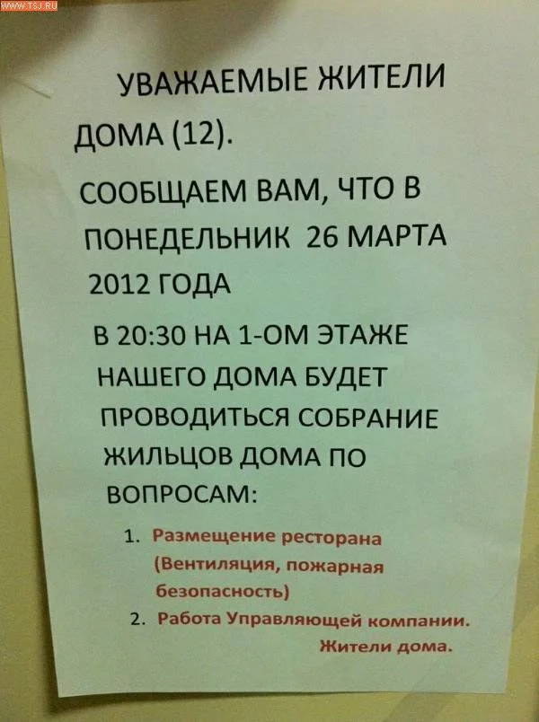
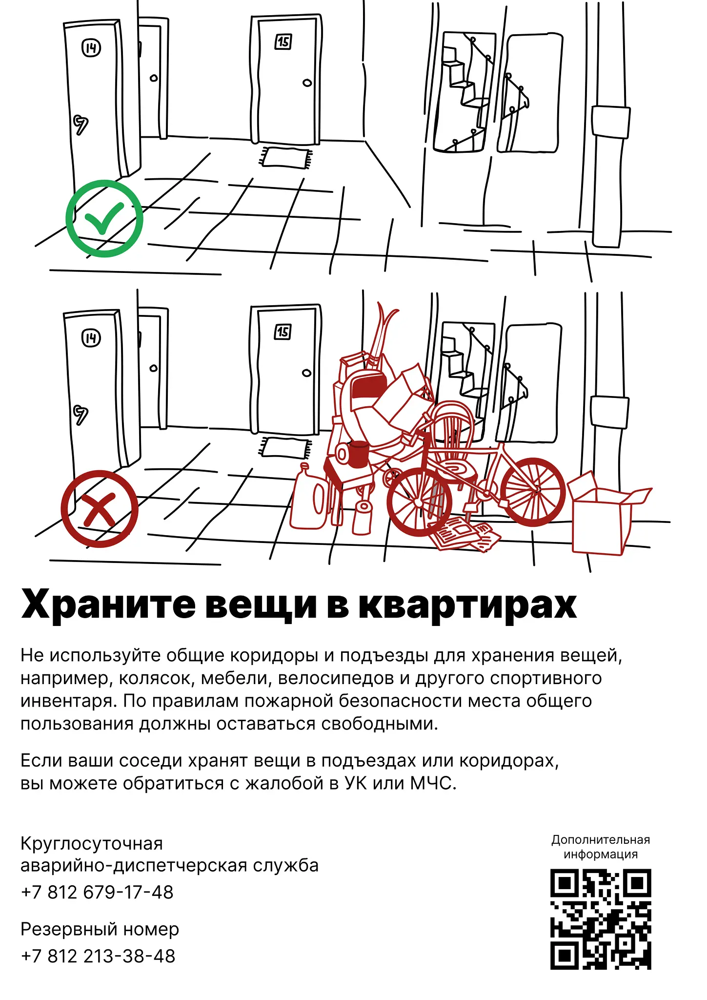
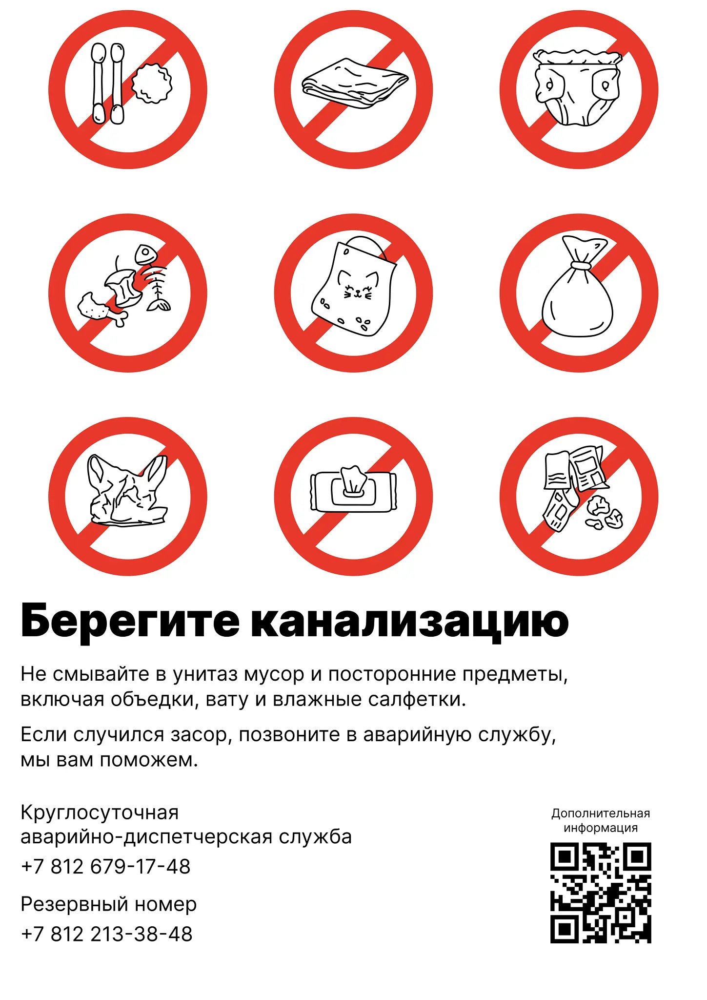
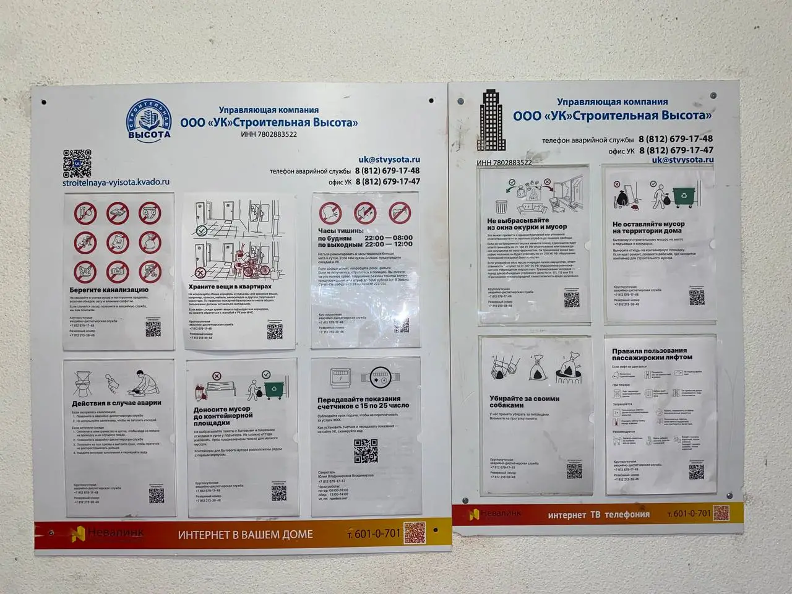
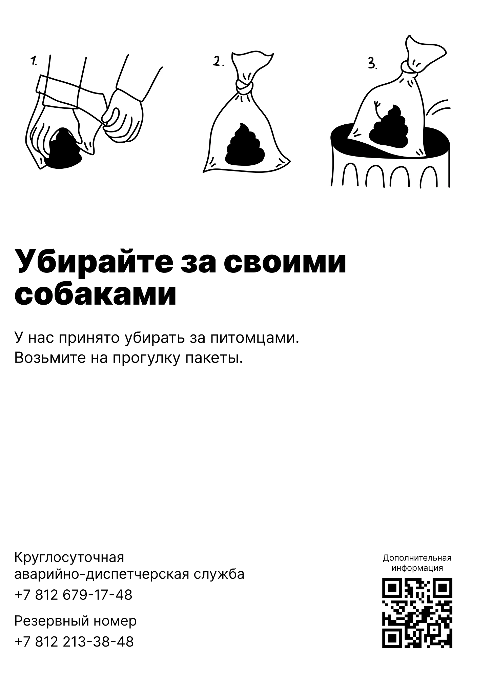
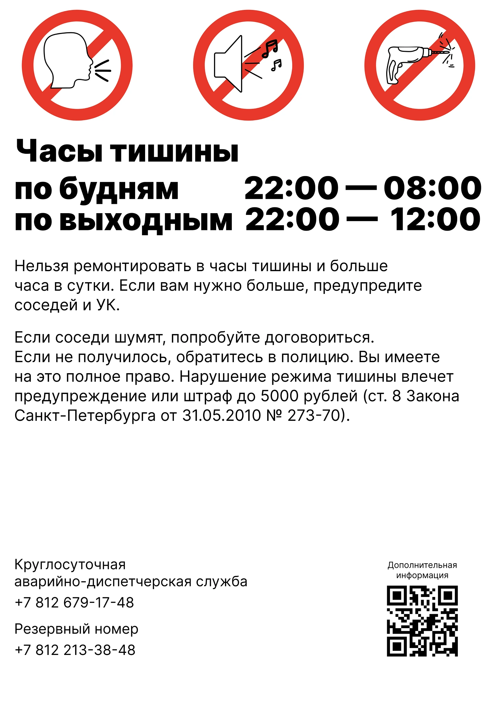
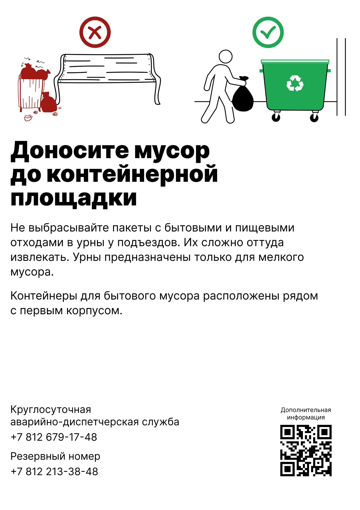
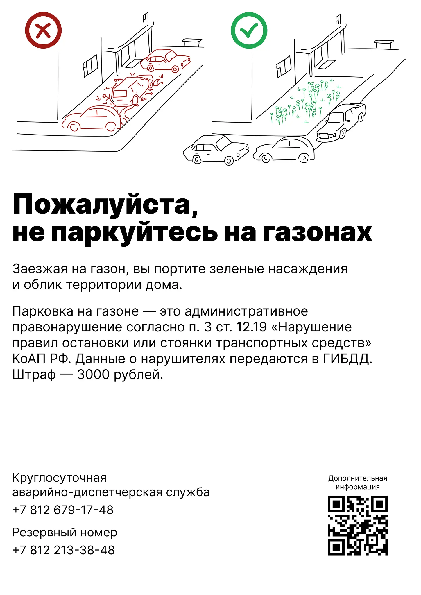
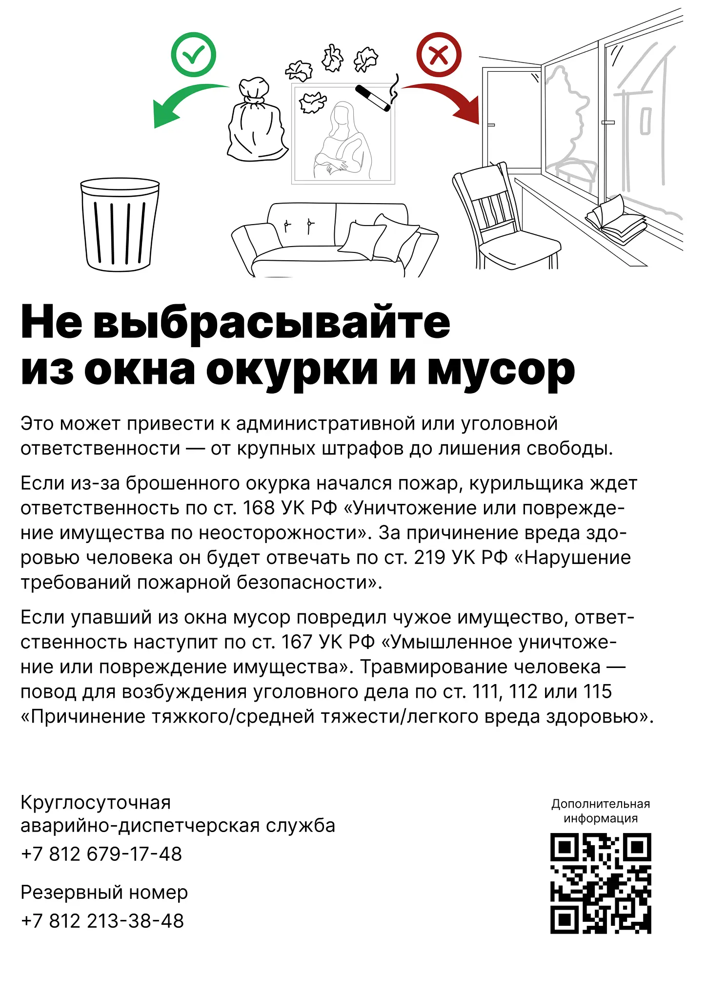

Помощник ЖКХ
Система визуальных пособий для жильцов: плакаты и сайт, которые переводят канцелярский ЖКХ-язык на человеческий.Дипломный проект в Школе дизайнеров Бюро Горбунова. Арт-директор — Максим Ильяхов. Тексты — Алина Михайловская, Школа редакторов Бюро. Дизайн, иллюстрации и вёрстка — я.
Открыть сайт-справочник →Проблема
Жильцы не читают официальные объявления УК и не понимают их. Мелкий шрифт, бюрократические формулировки, ни одной схемы — и человек либо игнорирует уведомление, либо звонит диспетчеру по вопросу, ответ на который висит у него перед глазами.


Типичное объявление в подъезде. Скорее всего, что-то подобное вы видели и в своём доме.
В результате УК тонет в повторяющихся звонках по одним и тем же темам — свет, вода, мусор, прописка — а жильцы остаются без понятных ответов.
Исследование
Чтобы понять, какие проблемы повторяются от дома к дому, мы разобрали объявления и регламенты в 60 жилых комплексах Москвы, Петербурга и Екатеринбурга.
Вычленили типовые сценарии, которые встречаются почти везде: что делать при аварии, как и куда сдавать показания счётчиков, правила по мусору и парковке, тишина, регистрация. Это и стало картой того, что система должна закрывать.
Главный вывод исследования: проблема не в конкретном доме, а в самом языке коммуникации между УК и жильцом. Значит, и решение должно быть не разовым плакатом для одного ЖК, а переносимой системой, которую можно поставить в любой дом, подставив местные контакты и правила.
Решение: модульная система
Я собрал систему из 11 плакатов, закрывающих 11 типовых сценариев. Все построены по единой структуре:
1. Иллюстрация, которая объясняет смысл с первого взгляда.
2. Короткий конкретный заголовок.
3. Текст на человеческом языке (за него отвечала Алина).
4. Контакты и QR-код на сайт-справочник.


Единая структура держит систему цельной: разные темы — один узнаваемый формат.
Все иллюстрации нарисовал сам, в едином векторном стиле — это позволяет добавлять новые плакаты под новые сценарии, не ломая систему.
Сайт-справочник
Плакат отвечает на один вопрос здесь и сейчас. Полную информацию собрал cайт «Помощник ЖКХ»: навигация по темам, инструкции для жильцов, и главное — возможность подставить контакты конкретной УК, график уборки и локальные правила.
Это не сайт одного дома, а шаблон под масштабирование: разворачивается в любом ЖК заменой контента, без переделки.
Внедрение
Большинство УК из тех, что мы обошли, были готовы повесить готовые плакаты — но не участвовать в разработке. УК «Строительная высота» (ЖК «Парнас») согласилась работать с нуля и стала пилотным домом.
Результат внедрили: плакаты висят в подъезде. Это не концепт — система прошла путь от исследования до реальной стены реального дома.
Из обратной связи: несколько жильцов отметили, что новые плакаты понятнее прежних объявлений. Системного замера мы не проводили — это честно оставляю как ограничение пилота, а не как доказанный результат.
Что дальше
Пилот показал, что система работает и переносима. Следующие шаги, которые я вижу для проекта:
Размещение по логике дома, а не на одном стенде: плакат про личные вещи — на этажах у квартир, про окурки — у общих балконов, напоминание о датах сдачи счётчиков — в лифте. Информация должна стоять там, где возникает вопрос.
Единое оформление стенда вместо стандартного, чтобы система выглядела цельно и в физическом пространстве.
Лендинг проекта для УК — чтобы продавать решение другим домам.
Доработка сайта-справочника до полноценного продукта.
Проект живой, и я продолжаю его развивать — это не закрытая тема, а система, у которой есть следующий шаг.
Роль и команда
Я: концепция, исследование, дизайн системы, все иллюстрации, вёрстка сайта
Алина Михайловская (Школа редакторов Бюро): тексты, перевод канцелярита на человеческий язык
Максим Ильяхов: арт-директор


Сейчас плакаты висят на стандартном стенде, выглядит неидельно. В идеальном мире хотелось бы разместить плакаты формата А3 в логичных местах, например, про вещи — на этажах рядом с квартирами, про окурки — у общих балконов. Какие-то напоминалки, по типу дат сдачи показаний счётчиков — в лифте.
А со стендом можно сделать что-нибудь такое, чтобы всё выглядело в едином виде.








